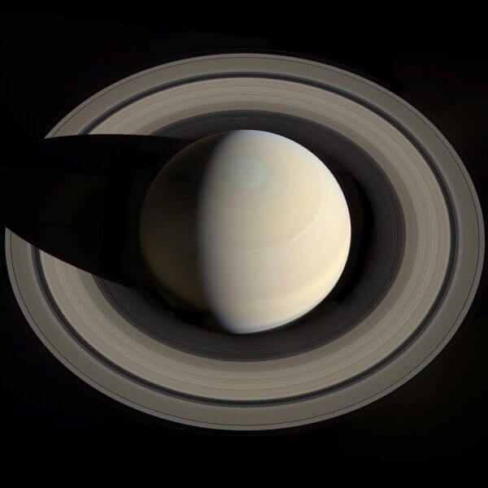
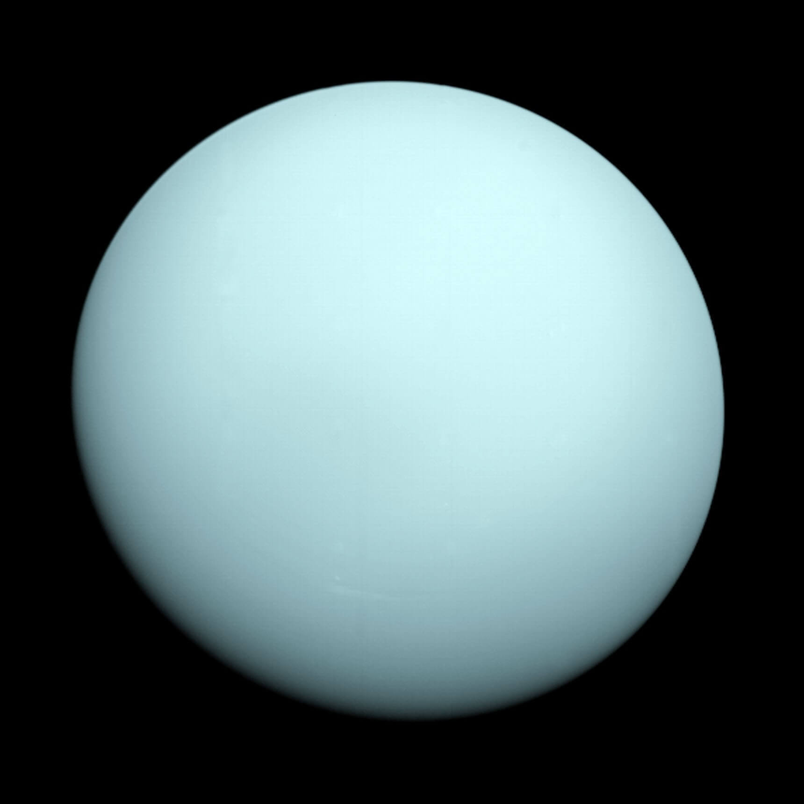
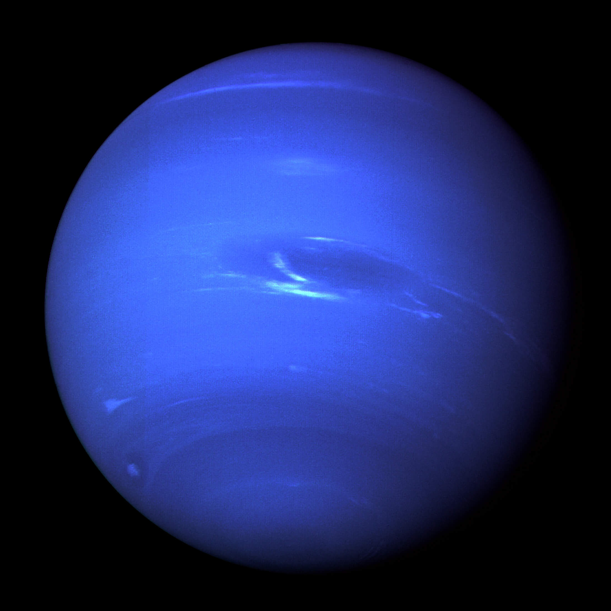

中文名：土星
直径：116464km
公转周期：29.45年
英文名：Saturn
表面重力：1.25g
表面温度：-139摄氏度
相比巨大的土星，土星环的厚度出乎很多人的想象，因其厚度仅20米左右。
土星环是太阳系中最显著的一大特征，主要是碎石、冰块等组成，土星环
有七大环组成，各环的宽度不同，亮度也不同，环与环之间的缝隙称为环
缝，整体看来，土星环就像一顶草帽的帽沿，也正因为这个光环的存在，
使得土星成为群星中十分美丽的一颗。

中文名：天王星
直径：50724km
公转周期：84年
英文名：Uranus
表面重力：0.886g
表面温度：-226摄氏度
1781年,英国一个音乐师威廉·赫歇尔,在用他自制的望远镜作巡天观测时,发现了一颗
特别的天体,它有一个隐约可见的绿色视圆面。赫歇尔最初把它当作彗星,因为从来还没
听说过行星能为人发现。但从接连的观测中,他很快算出了它的轨道,证明它确实是一颗
行星。这是在水金、火、木、土等早为人们所知的行星之外,在18世纪第一颗被人发现的
行星,也是肉眼能见到的最暗的行星。它被取名为天王星。

中文名：海王星
直径：49244km
公转周期：164.8年
英文名：Neptune
表面重力：1.14g
表面温度：-218摄氏度
自1781年发现天王星后,人们又发现它在轨道上不住地在跳着“扭摆舞”，多数人认为,
这是因为天王星外还有一个“隐身人”在“引诱”着它!幸运的是，法国有个初生之犊——
勒维耶,他也在计算天王星的这个不露面的伙伴的位置。计算是极其复杂的,但他未被
这个包含33个方程式的难题所吓倒,不分昼夜暑寒地攻关,终于得到了解答。海王星是
人类用笔在纸上“发现”的行星。它的发现,是人类智慧的结晶,生动地证明了科学预言
的巨大威力,恩格斯对此曾给予极高的评价。
 火星
火星